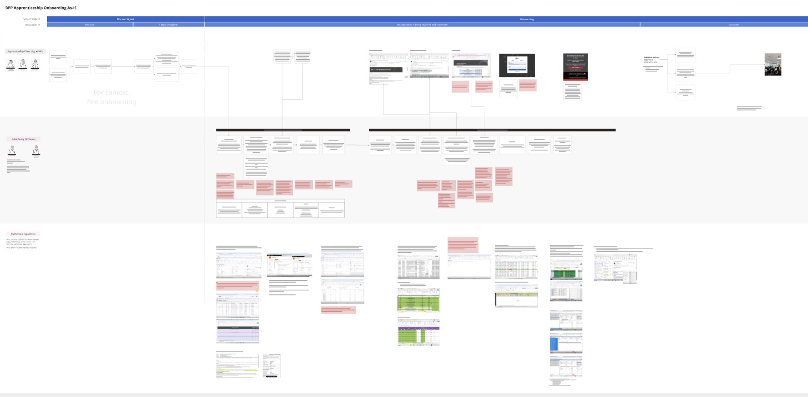
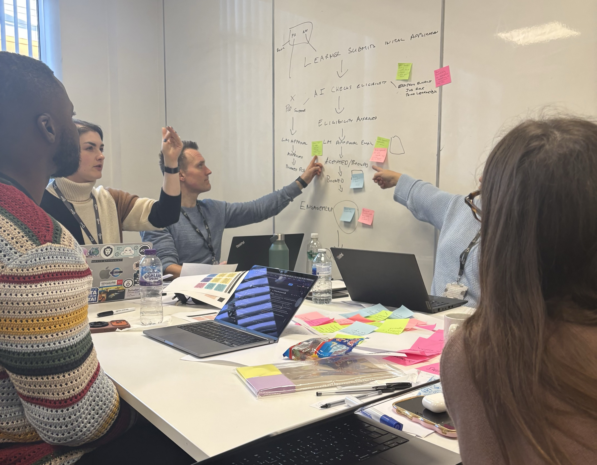

Cutting onboarding lead time from 6 weeks to 3.
A diagnostic across 13,000 apprentices found 51% of lead time sitting on hold. A phased plan and a working prototype turned that into delivery.
A 6-week cycle, and no shared view of the cost
BPP Education onboards apprentices across five client segments, each reaching the same outcome by a different route. Every team involved had built its own spreadsheet to work around gaps in the core process. Leadership suspected the cost was too high but had no shared view of where the time was actually going.
Build a shared view, then recommend what to change
BPP engaged me with the P&T Academic Life team to run a focused diagnostic: build a shared view of how onboarding actually worked, and recommend a prioritised set of changes leadership could act on with confidence.
Learning the service from the people running it
I ran the diagnostic myself: workshops with 50+ stakeholders, an end-to-end map of the as-is service. That work surfaced the real cost driver: 51% of onboarding lead time was spent on hold, waiting on manual reconciliation between systems that didn’t agree with each other. I converted each painpoint into a testable hypothesis, brought the operational teams into a workshop to shape the solutions themselves, and sequenced the results into three delivery waves ordered by impact against platform risk. To de-risk the recommendation before BPP committed budget to it, I built a working prototype of the new journey and used it to pressure-test the plan with leadership before sign-off.


A clickable journey, not a slide
A ten-step interactive prototype of the to-be onboarding journey, built in Claude in days rather than weeks. It covered both the client and BPP lanes, and became the artefact leadership used to ground scope, sequencing and procurement decisions.
View the walkthrough ↗A diagnostic the business acted on
The findings fed directly into the delivery teams’ roadmaps. Slice 1 is now in active delivery. The numbers below are projections modelled against the operational baseline, not measured outcomes.
Projections — directional, modelled from baseline data captured during discovery